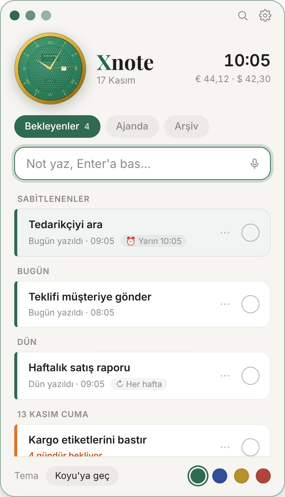
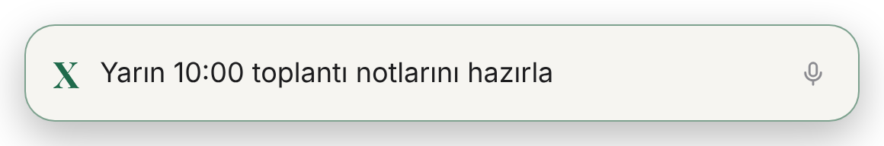
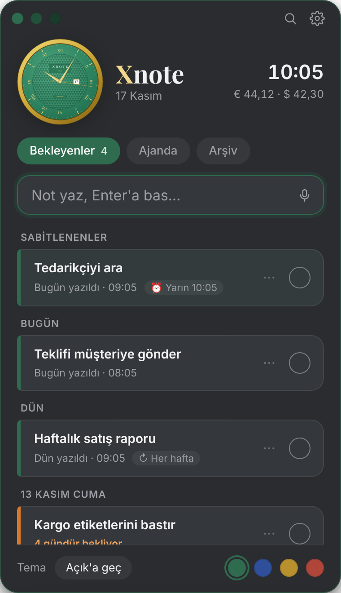

Aklına geldiği an yaz. Gerisini Xnote hatırlar.
Masaüstünün köşesinde duran not, hatırlatma, ajanda ve döviz kuru paneli. Açmak için uygulama aramazsın, hep oradadır.

Küçük bir panel, yerinde duran işler
Not almak için başka bir pencereye geçmen gerekmez. Xnote işin bittiğinde arkaya çekilir.
Yaz, Enter'a bas
Hızlı not kutusu hangi programda olursan ol ekranın ortasında açılır. Yazamıyorsan mikrofona söyle.
Hatırlatma ve alarm
Nota saat ver; vakti gelince Windows bildirimi çıkar ve kısa bir zil çalar. İstersen her gün, her hafta ya da her ay tekrarlanır.
Ajanda ve arşiv
Takvimden bir güne tıkla, o gün ne yazdığını gör. Tamamlanan notlar silinmez, arşivde kalır.
Kur ve çevirici
Merkez Bankası'nın euro ve dolar satış kuru panelin üstünde durur. Tıkla, tutarı yaz, karşılığını gör.
Masaüstü widget'ı
Görev çubuğunda yer kaplamaz, pencerelerin arkasında masaüstünde durur. Birden çok ekranın varsa hangisinin hangi köşesinde duracağını sen seçersin.
Notların sende
Her şey kendi bilgisayarında saklanır, hesap açmak gerekmez. Günlük otomatik yedek alınır, notlar Excel'e aktarılabilir.
İki kısayol yeter
Fareye uzanmadan not al, paneli çağır, işine dön.
- CtrlAltN Hızlı not kutusu
- CtrlAltM Paneli aç ya da gizle
- CtrlF Notlarda ara


Senin masaüstüne uyar
Açık ya da koyu tema, dört vurgu rengi. Panel açılırken yaslandığı köşeden büyür, kapanırken oraya çekilir.
- Windows açılışında kendiliğinden hazır olur.
- Üç gündür bekleyen notu turuncuyla öne çıkarır.
- Önemli notu listenin tepesine sabitlersin.
- Yeni sürüm çıktığında kendisi indirir, sana sorup kurar.
Kurulum bir dakika sürer
- İndirKurulum dosyası yaklaşık 75 MB. Diskte 230 MB yer tutar.
- KurDosyayı çalıştır, "Kur" düğmesine bas. Kurulum yerini istersen değiştirebilirsin.
- YazPanel ekranın köşesinde açılır. Ctrl Alt N ile ilk notunu al.
Xnote henüz dijital imza taşımıyor. Bu yüzden Windows ilk çalıştırmada mavi bir uyarı gösterebilir; "Ek bilgi" bağlantısına, ardından "Yine de çalıştır" düğmesine basarak devam edebilirsin. Kaldırmak istediğinde Windows'un "Uygulamalar" listesinden kaldırırsın; program, notlar ve ayarlar birlikte silinir.